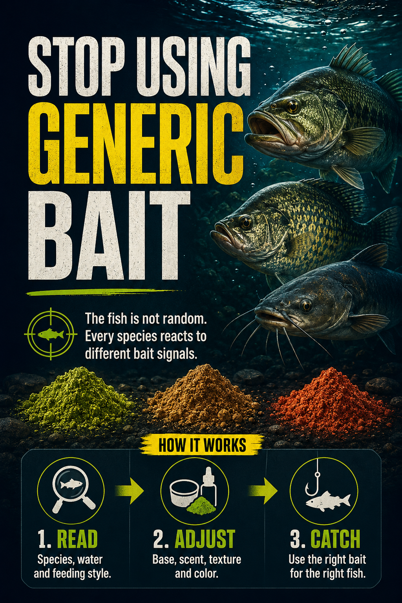
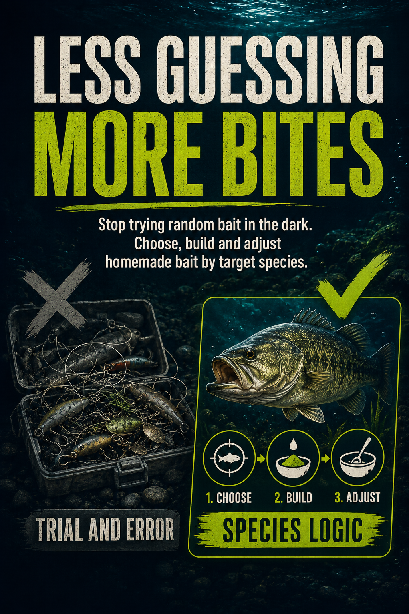
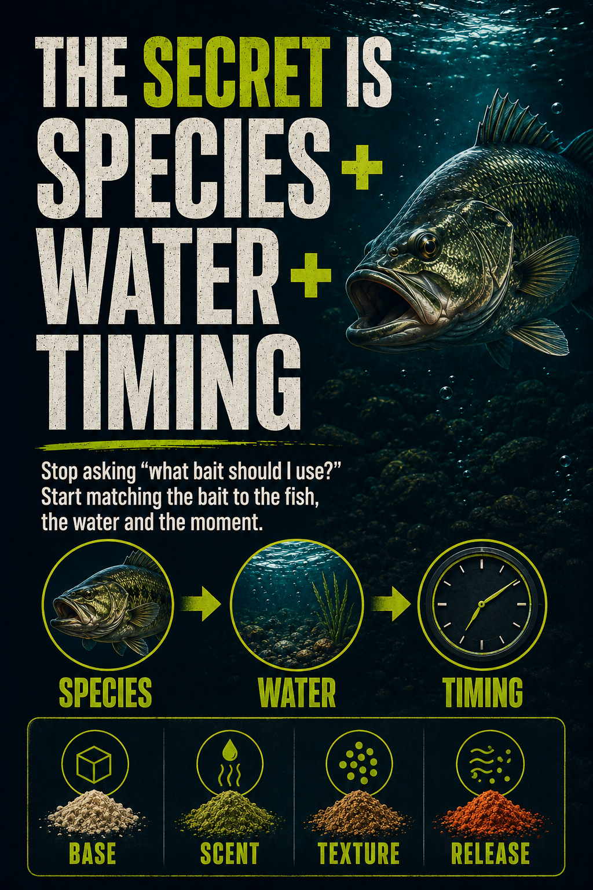
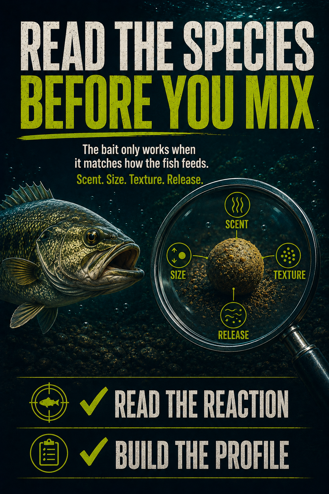
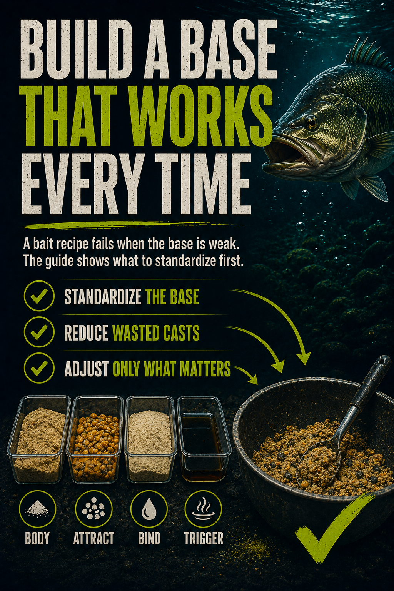
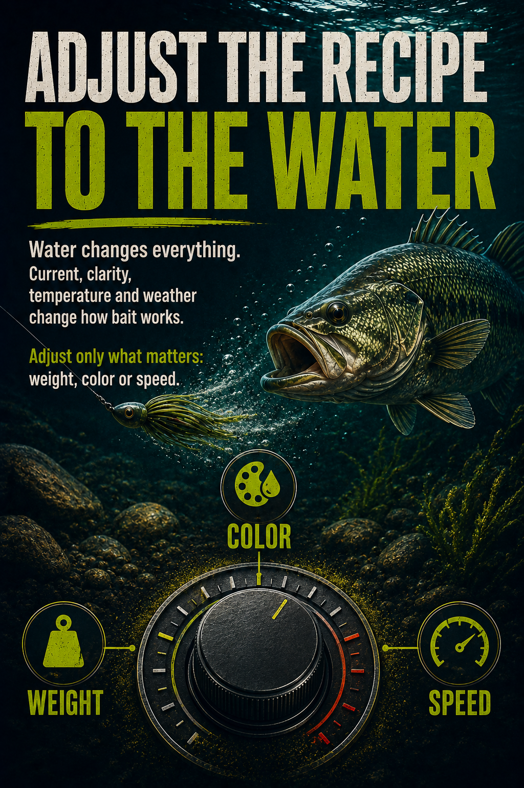

You may not be a bad angler. Your bait may be sending the wrong signal.
Most slow days do not start with the cast. They start with the bait choice: wrong scent, wrong texture, wrong size, wrong moment.
Fish Follow Signals
If the bait does not match how that species feeds, the fish can ignore it even when you are in the right spot.
Generic Bait Costs Time
One-size-fits-all bait forces you into trial and error while the bite window gets smaller.
Digital guide for species-specific bait decisions


Stop choosing bait by habit. Choose it by the fish.
Isca Turbo gives you a repeatable decision system before you mix, rig or cast.



Before the next trip, know exactly what bait profile to build.
Each species page gives you the fish behavior, the bait recipe, the rig, the presentation and the mistake to avoid.
Read The Species
Understand what the fish eats, where it holds and which bait signals matter most.
Build The Bait
Use clear homemade bait recipes with ingredients, steps and practical field notes.
Fish It Correctly
Match rig, presentation and water conditions so the bait works the way it was meant to.
Freshwater, inshore and nearshore species. One guide in your phone.
Includes 60 species across the United States and Canada, with recipes and presentation notes built around how each fish actually feeds.
Stop wasting casts with bait that was never built for the fish in front of you.
Isca Turbo by Species is your bait decision guide: open it before the trip, pick the species, build the bait, adjust to the water.
What You Get
- The complete digital bait guide for 60 target species
- Homemade bait recipes with step-by-step instructions
- Species profiles, feeding behavior and best conditions
- Rig and presentation notes for each fish
- Pro tips and common mistakes to avoid
Replace guessing with species logic before your next cast
Is this only for beginners?
No. It is for any angler who wants a clearer bait decision instead of guessing from memory.
Is it only freshwater?
No. The guide covers freshwater, inshore saltwater, nearshore and pelagic species.
What is the big promise?
Less random bait choice. More structured decisions based on species, water and timing.